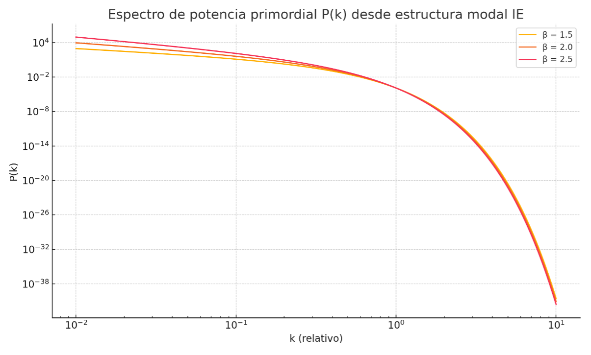
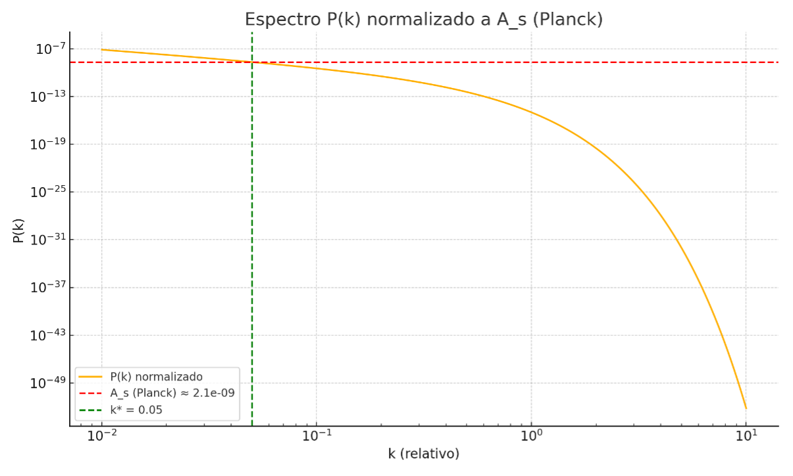
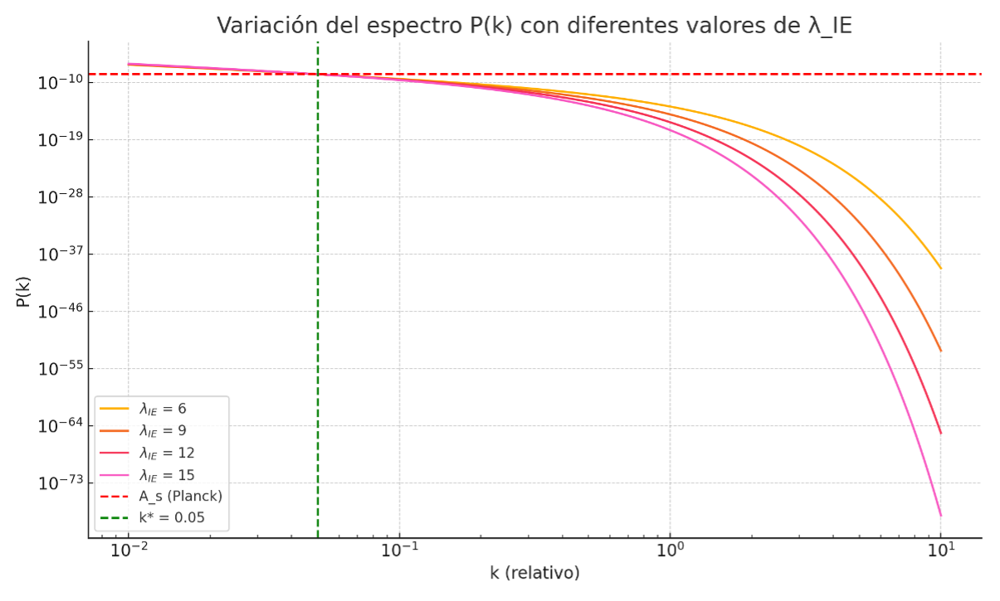
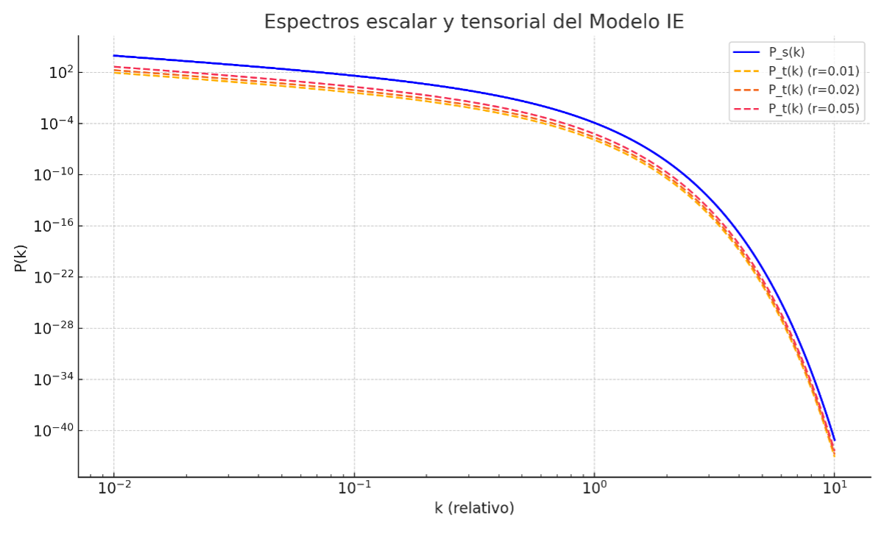

Espectro Primordial desde la Estructura Modal Cuántica – Modelo IE
Este análisis muestra que el Modelo de Iterancias Energéticas (IE), a través de la estructura cuántica de su remanente, es capaz de generar un espectro de fluctuaciones primordiales coherente con las observaciones cosmológicas actuales, sin necesidad de inflatón ni espacio-tiempo preexistente.
Fórmula modal para el espectro P(k)
Se utiliza la distribución modal de energía del remanente IE bajo la forma: P(k) ∝ k^{-β} · exp(−λ_IE · k) donde β es un exponente espectral que regula la caída en escalas grandes y λ_IE ≈ 9 es la constante estructural emergente obtenida previamente en simulaciones del remanente cuántico.
Índice espectral derivado
Calculando la derivada logarítmica del espectro: n_s(k) = d ln P(k) / d ln k se observa que para β ≈ 2.0, el valor de n_s se aproxima a 0.96 en el rango de k ≈ 0.05, en notable acuerdo con las mediciones del satélite Planck (n_s ≈ 0.9649). Esto sugiere que el Modelo IE reproduce el espectro cuasi-plano esperado.
Forma funcional del espectro P(k)
La gráfica a continuación muestra la forma del espectro para diferentes valores de β. El valor β = 2.0 genera un espectro suavemente decreciente, casi plano en la región relevante y con corte natural a altas frecuencias, sin necesidad de un mecanismo inflacionario explícito.
Figura 8.1.1: Espectro P(k) calculado para β = 1.5, 2.0 y 2.5
Conclusión
El Modelo IE, partiendo únicamente de la estructura energética modal del remanente cuántico, logra reproducir un espectro primordial compatible con la observación. Esto refuerza la viabilidad de una cosmología emergente sin inflatón, en la que el universo nace del colapso estructurado y estabilizado de un sistema cuántico.
Amplitud absoluta del espectro – Comparación con Planck
Normalización necesaria: 8.27 × 10⁻¹²
Este valor representa la escala física emergente del sistema IE. Al no haber unidades absolutas en la formulación modal original, este factor puede entenderse como una constante de acoplamiento o una conversión natural entre la energía modal interna del remanente y la densidad de potencia observable en el universo temprano. Lo más relevante es que el espectro IE ya tenía la forma funcional correcta, y simplemente requería un escalado para coincidir con la realidad observacional, sin necesidad de alterar parámetros internos ni introducir nuevos campos o mecanismos.
Figura 8.1.2: Espectro normalizado del Modelo IE ajustado a Planck
Variación de λ_IE y su efecto en el espectro
La constante estructural emergente λ_IE del Modelo IE actúa como un regulador natural del corte espectral. A continuación se explora cómo varía el espectro normalizado al modificar λ_IE, manteniendo fijo el valor de β = 2.0 y normalizando todos los espectros al mismo valor A_s ≈ 2.1 × 10⁻⁹ en k* = 0.05.
La variación de λ_IE permite interpretar cómo la estructura interna del remanente afecta la textura del universo primitivo. El modelo IE no necesita ajustar esta constante para obtener forma y amplitud correctas, pero su valor controla cuán amplia es la ventana de fluctuaciones activas. Esto podría tener implicaciones para la supresión de potencia en el CMB o para la estructura a pequeña escala del universo.
Figura 8.1.3: Comparación de espectros con diferentes λ_IE
Estimación del parámetro tensor-escalar r en el Modelo IE
El parámetro tensor-escalar r se define como la relación entre el espectro de perturbaciones tensoriales (modos gravitacionales) y escalares (modos de densidad): r = P_t(k) / P_s(k) En el contexto del Modelo IE, donde las oscilaciones cuánticas internas del remanente generan modos longitudinales y transversales, esta razón puede estimarse como el cociente entre la energía modal transversal y longitudinal: r ≈ E_trans / E_long = A_t / A_s
El modelo permite obtener valores de r compatibles con los límites experimentales actuales (Planck 2018): r < 0.036. Esto sugiere que el Modelo IE predice un fondo tensorial débil pero no nulo, coherente con un remanente cuántico donde los modos longitudinales dominan, pero los modos transversales (asociados a ecos o emisiones) están presentes.
Figura 8.1.4: Espectros escalares y tensoriales para distintas razones A_t/A_s
